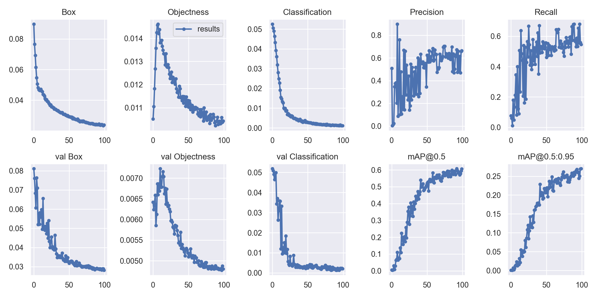

三个产线痛点，三处架构改造
先看产线上什么在漏检，再决定改网络的哪里——每一次改动都对应一个明确的工业问题，全部以独立 yaml 配置提供，可单独验证、可 ablation。
六套配置的消融矩阵 ONE REPO, SIX HYPOTHESES
每套配置回答一个假设，按部署场景选择——而不是一份配置打天下。
实测条件 RUNTIME FACTS
NEU-DET：六类钢带表面缺陷 1,800 IMAGES · 6 CLASSES
公开基准做算法验证，方法可直接迁移到偏振片 / 光学膜 / 玻璃等产线自有数据——换数据不改代码。
NEU-DET 是公开 benchmark，不是独家工业数据——本仓库用它验证训练/评测管线与检测能力。
但 prepare_neu_det.py + defect_neu.yaml 可直接替换为自有产线数据，方法完整可迁移。
结果：六类缺陷，如实呈现 PER-CLASS mAP@0.5
整体 mAP@0.5 = 0.606，但均值会撒谎——逐类分解才是质检场景的真话：三类已可用，两类是硬骨头。
逐类 mAP@0.5 val · 179 IMAGES
训练收敛 RAW ARTIFACT

crazing：一场严重的漏检 RECALL ≈ 0
* 这组数字的含义：模型在当前置信阈值下几乎不预测该类——是严重漏检，不是误检。 敢把它放在第一行讲，是因为根因可以一条链讲清楚：
混淆矩阵同样佐证：对角线外的混淆主要发生在 crazing / scratches / rolled-in_scale 之间—— 条状与网状缺陷在特征空间彼此纠缠，这正是 §08 路线图的出发点。
针对性超参 data/hyp.opt.yaml 已就绪：fl_gamma: 2.0（Focal Loss 聚焦难例）+
hsv_v: 0.6(亮度/对比度扰动) + mosaic: 0.5（降低对小目标的过度压缩），并以 --img 800 高分辨率复训——
目标是 crazing 与 rolled-in_scale 的召回，同时守住整体 mAP。
传统图像处理：被实验定位过的工具
CLAHE、Gamma、双边滤波、Canny、Top-Hat / Black-Hat、开闭运算、Otsu、连通域——
每类缺陷跑完整 12 步管线（tools/preprocess_demo.py），再用 GLCM / LBP 纹理特征做对照。
传统 CV 不做检测器，它的角色由实验说了算：
三种角色
- R1训练数据增强——CLAHE / 形态学扰动加入训练分布，提升难例类召回（推荐用法）
- R2可选推理预处理——提升低对比度输入可辨识度（有边界，见右）
- R3特征工程基线——GLCM 纯 numpy 实现（对比度/同质性/能量/相关度）+ LBP，验证深度特征是否学到本质差异
决定性实验：CLAHE 硬加在推理期 同一权重 · 同一阈值
CLAHE 让网状细纹浮现，最高置信度提升近 3 倍——增强有效。
背景纹理被同步放大，12 框中混入多个异类误检；rolled-in_scale 上效果亦不稳定—— 推理期硬加不是可靠方案。
三条部署路径，全部打通 ALGORITHM → SERVICE
检测模型的价值在产线上：原生 export 链路导出，REST 服务对接 MES / 上位机做实时质检。
下一步：攻两个硬骨头 NEXT EXPERIMENTS
Ablation 对比表 PENDING · 超参已备
| 模型 | img | 关键优化 | mAP@0.5 | crazing |
|---|---|---|---|---|
| P2 baseline | 640 | COCO 迁移 + autoanchor | 0.606 | 0.261 |
| P2 + opt | 800 | Focal Loss + 对比度增强 + 降 mosaic | 待跑 | 待跑 |
data/hyp.opt.yaml 已就绪；若 4GB 显存在 img 800 下 OOM，降级路径（img 736 / batch 4）已写进 README。优先级 PRIORITIZED
- P0P2 + opt 复训
高分辨率 + Focal Loss，主攻 crazing / rolled-in_scale 召回 - P0CLAHE 进入训练增强
把 §06 实验结论落地：增强进分布，不进推理 - P1C3TR (P6) 对照组
验证 Transformer 上下文对低对比度条带缺陷的增益 - P1自有产线数据迁移验证
换数据不改代码：偏振片 / 光学膜 / 玻璃场景